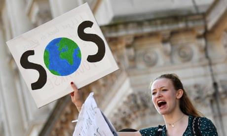

Kenyan 2004 Nobel peace prize winner and environmentalist Wangari Maathai. Photograph: Antony Njuguna/Reuters
Kenyan 2004 Nobel peace prize winner and environmentalist Wangari Maathai. Photograph: Antony Njuguna/Reuters
Young people in the global south have been tackling the climate crisis for years. They should be celebrated too
idhima Pandey was just nine years old in 2017 when she filed a lawsuit against the Indian government for failing to take action against climate change. Pandey’s fierce, astounding passion for the environment is not accidental. Her mother is a forestry guard and her father an environmental activist; and the whole family was displaced by the Uttarakhand floods of 2013, which claimed hundreds of lives.
In Kenya Kaluki Paul Mutuku has been actively involved in conservation since college, where he was a member of an environmental awareness club, and has been a member of the African Youth Initiative on Climate Change since 2015. Raised in rural Kenya by a single mother, Mutuku’s vigorous activism, like Pandey’s, was inspired by the direct challenges his family (and wider community) faced from the effects of climate change: “Growing up, I witnessed mothers cover kilometres to fetch water,” he says.
For years, young people across the world have been campaigning to draw attention to the crisis our planet faces, and to tackle it. Yet it seems the media is only interested in one young climate activist.
Without doubt, the remarkable Greta Thunberg is a superstar. In just one year, she has gone from being an unknown teenager, living in the comfort of a middle-class home in Sweden, to being one of the most recognised faces on the planet. She is fearless, earnest, passionate about the planet and determined.
But so are her peers. Born in a wealthy country, to parents who can afford to accommodate their daughter’s convictions, and in a culture where children are encouraged to speak up, Thunberg has intersecting privileges. She is aware of this and regularly mentions her fellow youth activists in her speeches, to remind journalists that there are others working alongside her.
People such as the teenager Aditya Mukarji, who in March 2018 began a war against plastic straws. Within just five months, he had already helped replace more than 500,000 plastic straws at restaurants and hotels in New Delhi. “People listen more to children bringing up environmental concerns,” he says.
Last year Nina Gualinga, an indigenous activist from the Ecuadorian Amazon since the age of eight, won the WWF’s top youth conservation award. At 15, Autumn Peltier from the Anishinaabe people of Canada, is a veteran clean water and climate advocate. And Leah Namugerwa is a 15-year-old Ugandan activist.
There are many more whose names we rarely, if ever, hear. Yet, frustratingly, these other activists are often referred to in the media as the “Greta Thunberg” of their country, or are said to be following in her footsteps, even in cases where they began their public activism long before she started hers – their own identities and work almost completely erased by a western media that rarely recognises progress outside its own part of the world.
This tendency of the media to present Thunberg as the one who calls, and the others existing only to heed her call, is problematic, especially for those black and brown activists whose media invisibility leads to invisibility to organisations whose help they could greatly benefit from. This “white saviour” narrative invalidates the impact of locals working in their communities, and perpetuates the stereotype of “the native with no agency” who cannot help themselves. As an African I find these portrayals deeply offensive. It is insulting to present the members of the communities most threatened by climate change as passive onlookers who are only now being spurred on by the “Thunberg effect”.
Why did it take a Thunberg for the UN to organise its first youth climate summit? Those most affected should not be exiled to the fringes of the conversation. These other activists are being told their works, their contributions, don’t matter. The privileging of one campaigner’s narrative over others creates a world where Namugerwa would mention a Swedish teenager she only heard about a year ago as inspiration, but not Wangari Maathai, the environmentalist from neighbouring Kenya who won the Nobel peace prize in 2004. One could argue that it is natural for Namugerwa to find inspiration in a young girl close to her in age, but it is also likely that Maathai’s Green Belt Movement influenced her and her friends’ decision to plant trees on their birthdays to help the environment.
Planting trees. Collecting litter. Striking for the environment. I am in awe of all the young people calling attention to a very real and urgent problem. I applaud all of them for doing what they can, in big and small ways, to combat climate change. I must also acknowledge the young children in Kenya and Nigeria and other parts of the developing world who make toys out of recycled plastic and metal, and who would probably not know to call themselves climate advocates.
I applaud Bangladesh for being the first country to ban plastic bags in 2002, and Rwanda for banning non-biodegradable plastic in 2008 (and Kigali for being named by the UN as Africa’s cleanest city). One day at a time, our collective efforts may yet save the planet.
And while we continue to work towards that goal, the moral thing for western media to do is to also highlight the contributions of the black and brown saviours trying to make that happen so that when future generations talk of it, this will not be the story of a single narrative.
• Chika Unigwe is a Nigerian writer. Her latest book is Better Never Than Late
SOURCE: THE GUARDIAN

Sign up to the Green Light email to get the planet's most important stories
Read more